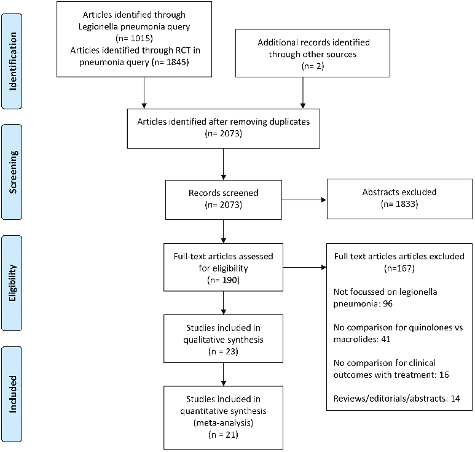
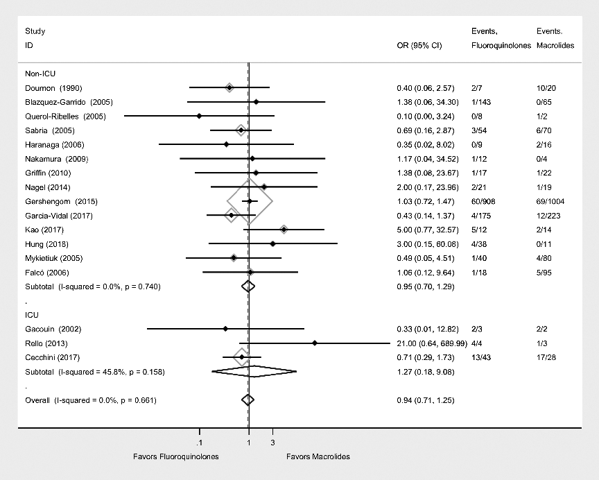
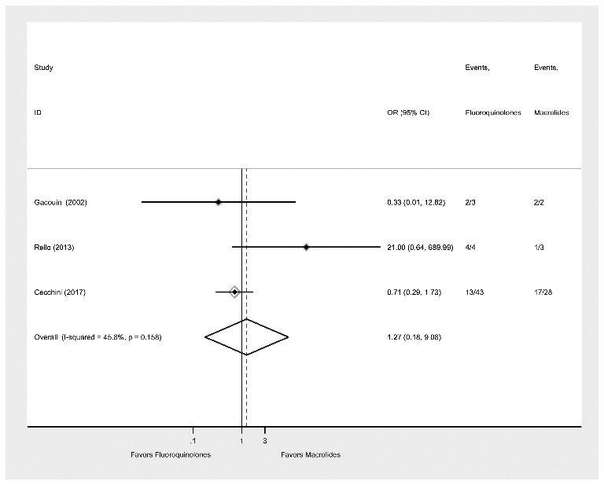

本ページで使用する略語一覧
| FQ | Fluoroquinolone — フルオロキノロン系抗菌薬（レボフロキサシン・モキシフロキサシン等） |
| MAC | Macrolide — マクロライド系抗菌薬（アジスロマイシン・クラリスロマイシン・エリスロマイシン等） |
| LVX | Levofloxacin — レボフロキサシン |
| AZM | Azithromycin — アジスロマイシン |
| CLR | Clarithromycin — クラリスロマイシン |
| OR | Odds Ratio — オッズ比 |
| CI | Confidence Interval — 信頼区間 |
| ICU | Intensive Care Unit — 集中治療室 |
| LOS | Length of Stay — 入院日数 |
| RCT | Randomized Controlled Trial — ランダム化比較試験 |
| IDSA | Infectious Diseases Society of America — 米国感染症学会 |
| PRISMA | Preferred Reporting Items for Systematic Reviews and Meta-Analyses — 系統的レビュー報告基準 |
SECTION 1 レジオネラ肺炎の疫学と臨床的重要性
増加する重要疾患：レジオネラ肺炎の現状
レジオネラ肺炎（在郷軍人病）はその発生率が世界的に増加傾向にあり、米国では2015年の6,079件から2017年には7,500件へと増加した。死亡率は9〜25%と高く、ICU患者ではさらに高い。主に水系感染（冷却塔・病院設備の給水系統）を介して感染し、米国における医療費は年間4億3,400万ドル、1エピソードあたり$26,741〜$38,363に達する重大な公衆衛生上の問題である。
診断は①尿中抗原検査、②下気道分泌物培養、③血清学的検査、④PCRのいずれかで確定する。尿中抗原検査は感度・特異度ともに高く、迅速診断として広く普及している（ただし血清型1型のみ検出）。
（2017年、CDC）
死亡率
医療費（米国）
SECTION 2 FQ vs MAC — 解決されていない臨床的疑問
ガイドラインは両薬剤を「同等の第一選択」と推奨している
IDSAはレジオネラ肺炎の第一選択抗菌薬として、フルオロキノロン系（FQ）またはマクロライド系（MAC）のどちらかを推奨している。FQとしてはレボフロキサシン・モキシフロキサシンが、MACとしてはアジスロマイシンが主に使用される（古いマクロライドであるエリスロマイシンは新しいMAC・FQに置き換えられた）。
どちらが最適か？ この問いに対して明確なエビデンスが不足していた。レジオネラ肺炎は稀な疾患であるため大規模RCTが実施されておらず、利用可能なエビデンスはほとんどが観察研究によるものであった。2014年の系統的レビュー（Burdet ら、12研究・879例）ではFQが優位な傾向（死亡率4% vs 10.9%）を示したが、統計学的有意差は認めなかった。
FQ使用に伴う副作用の問題：抗菌薬スチュワードシップの観点
FQは単にレジオネラに有効なだけでなく、以下の副作用が問題となる：
- Clostridioides difficile感染症リスクの増加
- 腱障害（アキレス腱断裂を含む）
- 神経系副作用（意識変容等）
- 大動脈解離・大動脈瘤との関連（別の系統的レビューで報告）
これらの副作用と抗菌薬スチュワードシップの観点から、「本当にFQをMACより優先すべきか」を明らかにすることが本研究の出発点である。
SECTION 3 研究デザインと文献検索
PRISMA準拠の系統的レビューとメタ解析
Scopus、Cochrane Central Register of Controlled Trials、PubMed、Web of Scienceを「創刊号〜2019年6月1日」の期間で検索した。「Legionella pneumonia」に加え、FQ・MAC各薬剤名、「legionnaires' disease」「legionellosis」等の関連語を組み合わせた包括的検索を実施した。言語制限は設けず、英語以外の論文は母国語話者による翻訳を行った。プロトコルはPROSPERO（CRD42019132901）に事前登録された。
包含基準：①レジオネラ肺炎でFQとMACを比較した研究、②診断が尿中抗原・培養・血清学・PCRで確定されたもの、③入院・外来・ICU問わず対象。除外：レジオネラデータのない研究。
主要アウトカムは死亡率。副次アウトカムは、臨床的治癒、解熱時間、入院日数（LOS）、合併症発生率とした。
Figure 1. 文献選択フロー（PRISMA）

初回検索2,861件 → 重複除去後2,073件 → スクリーニング → 最終的に21研究が採用された
SECTION 4 統計解析とバイアスリスク評価
メタ解析の手法
Stata 14.0（METANコマンド）を用い、DerSimonian-Laird法によるランダム効果モデルでメタ解析を実施した。異質性はI²統計量で評価し、カテゴリアウトカム（死亡・臨床的治癒・合併症）はOR、連続アウトカム（LOS・解熱時間）は標準化平均差で算出した。
バイアスリスクは修正Downs & Blackスケール（27項目、高スコアほどバイアス低）で2名が独立評価した。出版バイアスはファンネルプロット視覚評価とEgger検定で確認した。サブグループ解析として、FQ vs アジスロマイシン、FQ vs クラリスロマイシン、ICU専門施設の3解析を実施した。
SECTION 5 採用研究の概要と患者背景
21研究・3,525例の解析
最終的に21研究が採用された。研究デザインの内訳は観察研究18件、RCT 3件であった。単施設研究8件、多施設研究13件。11研究でICU管理の記載があり、うち4研究では重症患者は全員ICU管理されていた。
薬剤の使用状況：FQ群1,636例（46.4%）、MAC群1,889例（53.6%）。FQではレボフロキサシンが最多（908例）。MACではアジスロマイシンが最多（1,362例）、次いでクラリスロマイシン（188例）、エリスロマイシン（95例）。
患者背景：平均年齢60.9歳、男性67.2%、喫煙率52.2%（1,111例中580例）。COPDは17.3%、免疫抑制状態は23.4%。Fineスコアが報告された7研究では、38.8%が重症肺炎に分類された。全体死亡率（FQ・MAC合計）は7.18%（3,302例中237例）。
バイアスリスク評価：修正Downs & Blackスコアの平均は21（17〜25）。3件のRCTは最もバイアスリスクが低かった（スコア24〜25）。ファンネルプロットおよびEgger検定（P=0.946）で出版バイアスの証拠は認められなかった。
（うちRCT 3件）
（FQ 1,636 / MAC 1,889）
（FQ・MAC合計）
SECTION 6 主要アウトカム：死亡率
主要結果：FQ と MAC で死亡率に差なし
17研究が死亡率データを報告した。FQ群の死亡率は6.9%（1,512例中104例）、MAC群は7.4%（1,790例中133例）であった。
FQ vs MAC の死亡率に対するプールORは0.94（95% CI: 0.71〜1.25、I²=0%、P=0.661）であり、統計学的有意差は認められなかった。I²=0%は研究間の異質性が非常に低いことを示す。
（104/1,512例）
（133/1,790例）
（95% CI: 0.71–1.25）
Figure 2. 死亡率のフォレストプロット（全21研究）

FQ vs MAC の死亡率比較。プールOR 0.94（95% CI: 0.71–1.25）、I²=0%、P=0.661。各研究のダイアモンドが1を挟んでいることから、両群に有意差なし。
SECTION 7 副次アウトカム：臨床的治癒・解熱・入院日数・合併症
副次アウトカムも FQ と MAC で差なし
14研究が副次アウトカムのいずれかを報告した。各アウトカムの結果は以下の通り：
| アウトカム | 報告研究数 | 結果 | 解釈 |
|---|---|---|---|
| 臨床的治癒率 | 4研究 | プールOR 2.36 （95% CI: 0.33–16.92） |
有意差なし 2研究は両群とも100%治癒 |
| 解熱時間 | 6研究 （SD記載3研究のみ解析） |
標準化平均差 0.0 （95% CI: -0.21〜0.21） |
差なし |
| 入院日数（LOS） | 11研究 （6研究で解析） |
FQ群 0.13日短縮 （95% CI: -0.50〜0.24、I²=67.2%、P=0.009） |
統計学的・臨床的有意差なし I²高値で研究間異質性あり |
| 合併症 （胸水・呼吸不全・ 腎不全・敗血症性ショック等） |
4研究 | プールOR 0.80 （95% CI: 0.45–1.41） |
有意差なし FQ側でわずかに少ない傾向 |
副次アウトカムのエビデンスの質は全般的に低く、交絡・選択バイアス・データ欠損が主な要因であった。
SECTION 8 サブグループ解析：ICU患者・薬剤別比較
ICU患者サブグループ：データ不十分で確定的結論なし
ICU患者のみを対象とした3研究（完全データあり）でサブグループ解析を実施した。FQ vs MAC の死亡率に対するプールORは1.27（95% CI: 0.18〜9.01、I²=45%、P=0.16）であり、有意差は認められなかった。
しかしこのサブグループ解析は研究数がわずか3件と少なく、I²=45%と中程度の異質性もあり、ICU患者における結論を導くには不十分である。

Figure 3. ICU患者における死亡率のフォレストプロット（3研究）。プールOR 1.27（95% CI: 0.18–9.01）、I²=45%、P=0.16。
薬剤別サブグループ解析：FQ vs アジスロマイシン・クラリスロマイシン
| 比較 | プールOR | 95% CI | I² | P値 |
|---|---|---|---|---|
| FQ vs アジスロマイシン | 0.97 | 0.70–1.36 | 0.0% | 0.70 |
| FQ vs クラリスロマイシン | 0.74 | 0.19–2.84 | 26.6% | 0.24 |
いずれの比較でも有意差は認められなかった。
SECTION 9 有害事象
有害事象の報告：消化器症状・肝機能異常・静脈炎が主
3研究が有害事象を比較報告した。最も多い有害事象は消化器症状・肝機能異常・静脈炎であった。1研究（LVX vs クラリスロマイシン比較）ではクラリスロマイシン群で有害事象頻度が高かった（P<0.01）。他の1研究では両群で類似した頻度（FQ群8/40例 vs MAC群24/80例）であった。
1件のレトロスペクティブコホート研究（Gershengorn ら）では、傾向スコアマッチング後のC. difficile腸炎発生率に差はなかった（1.4% vs 2.1%、P=0.25）。
SUMMARY 第1〜3章のキーメッセージ
SECTION 10 2014年メタ解析（Burdetら）との比較
以前の知見を覆した：FQ優位は確認されなかった
Burdet ら（2014年）の系統的レビュー（12研究・879例）では、FQ群の死亡率4%（10/253例）に対しMAC群10.9%（23/211例）とFQ優位の傾向（プールOR 0.5）が示されたが、統計学的有意差は認めなかった。
本研究（2021年）は症例数を3,525例（879例 → 約4倍）に大幅に拡充した上で同様の評価を行い、死亡率に有意差がないことを示した。FQ vs MACのプールORも0.5から0.94に変化し、両群の差はほぼなくなった。LOS短縮効果も、以前の「3.0日短縮」から「0.13日短縮」（有意差なし）へと縮小した。
SECTION 11 研究の限界と今後の課題
主要な限界：副次アウトカムのデータ不足とICU患者の解析制限
本研究の最大の限界は、副次アウトカムの解析に使えるデータが不十分な点である。2014年以降に追加された研究はすべて観察研究であり、RCTではない。RCTは3件あるが、いずれも市中肺炎全体を対象とした研究でありレジオネラ症例のデータは限られた。
病勢重症度・ICU入室状況で層別化した死亡率が報告されていないため、メタ回帰が実施できなかった。FQの代表的な有害事象（C. difficile感染・腱障害・大動脈瘤）を評価するための十分なデータもなかった。
著者らは、今後のレジオネラ肺炎を対象とした多施設ランダム化比較試験の実施を推奨している。
SECTION 12 臨床的含意：どちらを選ぶか
結論：FQ と MAC は同等 — 薬剤選択は個々の患者背景で判断
本研究の結論は明快である。フルオロキノロン系とマクロライド系はレジオネラ肺炎治療における死亡率低下の有効性において同等であり、FQを優先するエビデンスはない。
臨床での薬剤選択の考え方（本論文から導ける示唆）
FQとMACの有効性は同等であるため、以下の個別因子を踏まえて選択することが合理的である：
- FQを避けたい状況：C. difficile感染リスクが高い患者、腱障害リスク（ステロイド使用者・高齢者）、大動脈瘤既往、FQを多用しているユニット（スチュワードシップ）
- MACを避けたい状況：QT延長リスクが高い患者（心疾患・電解質異常・他のQT延長薬使用）、薬物相互作用（CYP3A4基質）が問題になる場合
- 両薬剤に共通：経口バイオアベイラビリティが高いため、状態が安定すれば早期に経口投与へ切り替え可能
研究の主要な強み
包括的な検索戦略（専門図書館員が協力）により、レジオネラ肺炎に関する研究を網羅的に同定した。「肺炎のRCT」も検索対象に含めることで、抄録にレジオネラを記載していない研究も捕捉できた。言語制限なしで英語以外の論文も包含し、計7本の追加研究を同定した。出版バイアスの証拠も認めなかった。これらにより、利用可能なエビデンスを最大限に統合した結論を導くことができた。
SUMMARY 第4章のキーメッセージ
出典：Jasper AS, Musuuza JS, Tischendorf JS, et al. Are Fluoroquinolones or Macrolides Better for Treating Legionella Pneumonia? A Systematic Review and Meta-analysis. Clin Infect Dis. 2021;72(11):1979-1989.
DOI：https://doi.org/10.1093/cid/ciaa441
本資料は教育目的で作成したサマリーです。診断・治療方針の決定には必ず原典を参照してください。
制作：ICU 関谷